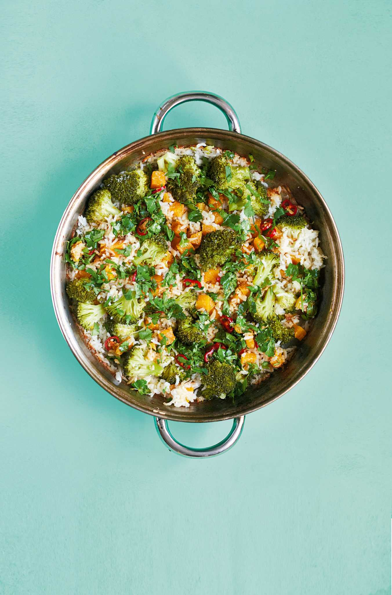

One Pot Dish with sticky rice, squash and broccoli

This sticky coconut rice works perfectly with the sharp coriander and lime dressing, with a good contrast from the sweetness of the squash and crunch from the cashews. It doubles up easily if you're feeding more people.
Ingredients
- 150g jasmine rice
- 1x400ml tin coconut milk
- 1 tbsp soy sauce
- 2.5cm ginger, grated
- 1 clove of garlic
- 300g squash, peeled and cut into 1cm cubes
- 300g broccoli, cut into florets
- 30g toasted cashews, to serve
Dressing
- 2 tbsp sesame oil
- 2 tbsp soy sauce
- 2 tbsp lime juice
- 2.5cm ginger, grated
- 1 red chilli, finely chopped
- 20g fresh coriander, finely chopped
Method
- Preheat oven to 180C fan/200C/gas 6
- Mix the rice, coconut milk, soy sauce, ginger and garlic in a roasting tin and top with the squash. Cover tightly with foil, then transfer to the oven and cook for 45 minutes.
- Top the rice and squash with the broccoli, then re-cover and return to the oven for a final 15 minutes. Pop the cashew nuts inot the oven on a small tray to toast at the same time.
- Mix together the oil, lime juice, soy sauce, ginger, chilli and coriander, adjusting the soy and lime to taste.
- Tip the dressing over the hot broccol, rice and squash, scatter with the toasted cashews and serve hot.